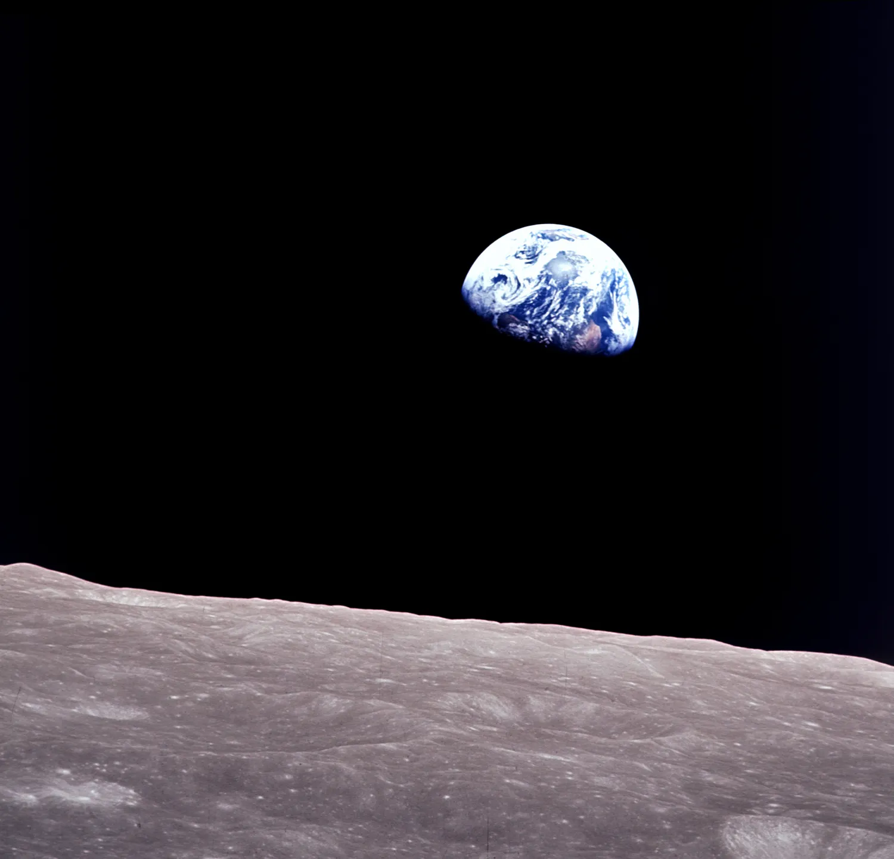
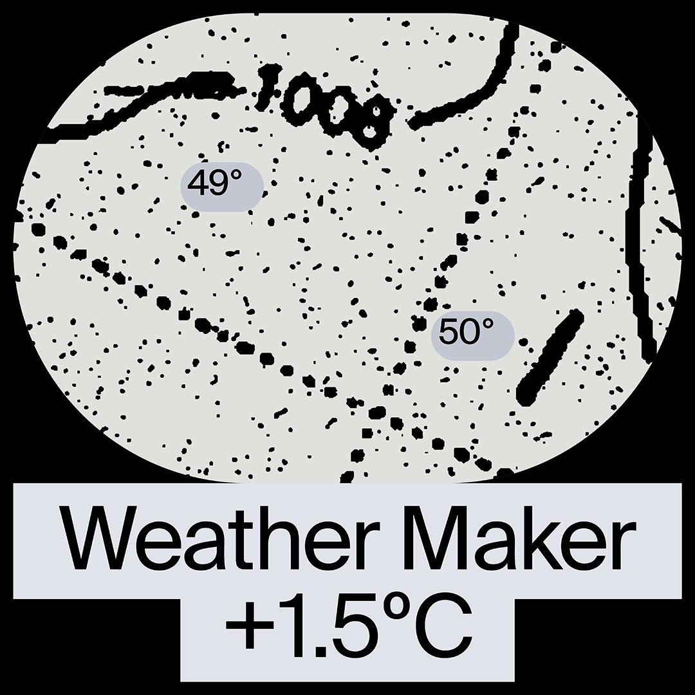
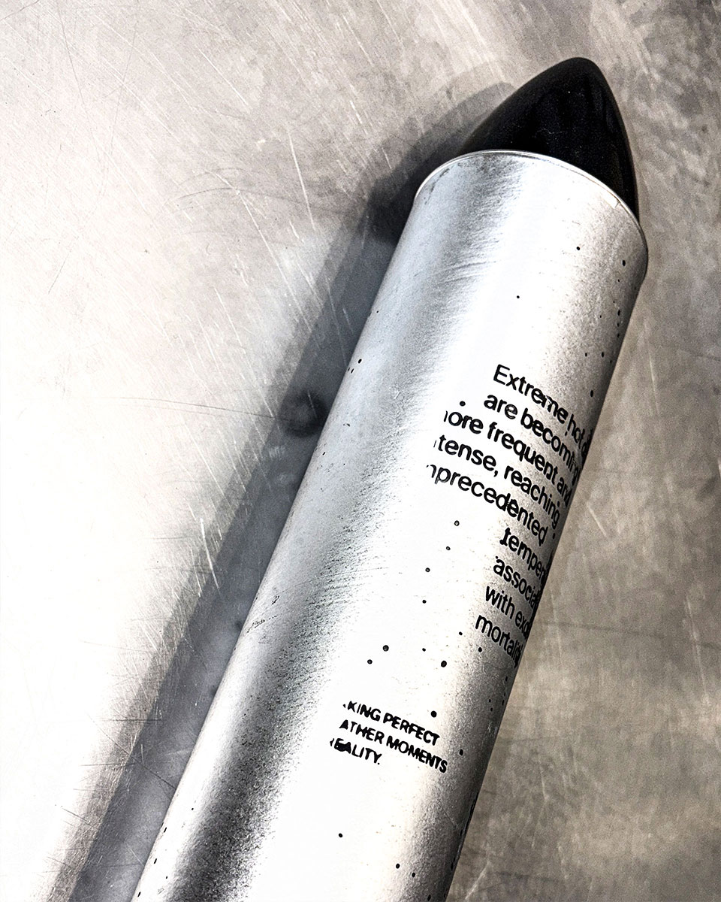
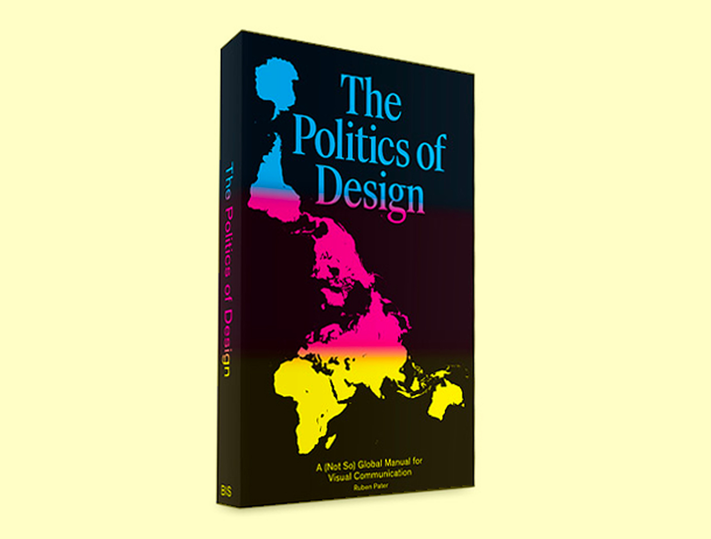
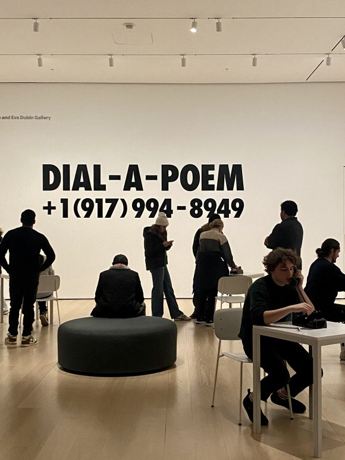
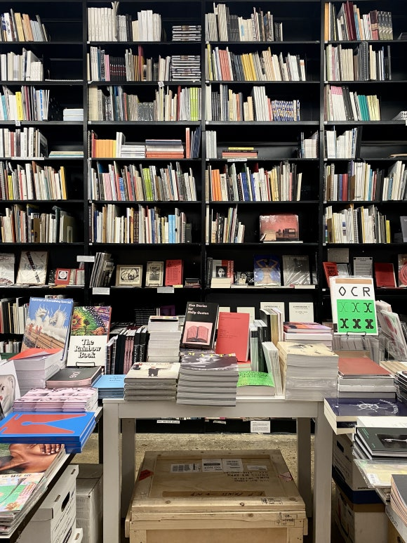
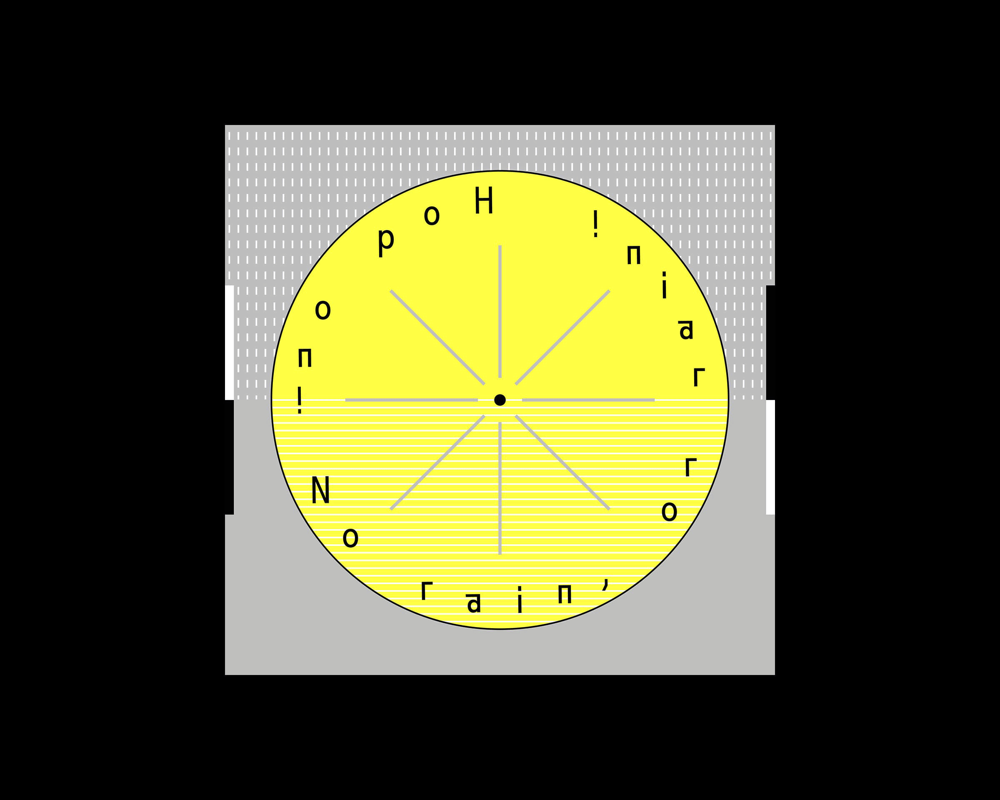
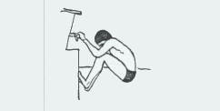

1. Every project is a story. It’s all about stories. The branding is finding a story. Even this introduction might as well... so this writing page is a brief story about myself.
2. I’m Yu Gyeong Moon, a designer specializing in typography, motion, visual storytelling, and creative coding.
3. Yes, my surname is Moon. I mean, the Moon in the sky. So I guess it was kind of inevitable that I’d become fascinated by the Moon, Earth, and photographs of space taken by the Hubble Space Telescope. There is something poetic about looking at images of space, and seeing Earth over the edge of the Moon.

Apollo 8 Earthrise, 1968, NASA4. I see myself as a creative worker interested in playful and thoughtful design. And in five years, I hope to introduce myself simply as a designer and a coder.
5. The process of transforming complex ideas or problems into graspable visual stories has always fascinated me. The friction is key. Super smooth or super human. I either eliminate the friction or embrace it. In the process, for better communication I confirm, admit uncertainty, learn from questions, and design based on them.

Weather Maker, 2024, thesis project6. Because of this background, I'm drawn to projects at the intersection of design, technology, and the future. For my bachelor’s thesis, for example, I worked on a speculative design project about cloud seeding technology. Translating the complex technology into more human, and envisioning a future where people can buy the weather.

7. Recently I've played more with motion. For example, here are some case study motion videos. Below is a brand identity application video I worked on at Hasan & Partners.
8. Anyway, who am I? Born in Korea, I’ve studied my BFA in Visual Communication Design in Seoul. Back in school, I was a member of the school typography club.
9. I’ve also been an avid reader of design books. One day, I came across this...

10. Ruben Pater, The Politics of Design, 2016
‘A design cannot be disconnected from the values and assumptions in which it was created, from the ideologies behind it. It can be difficult to see how visual communication and ideology are related because ideology is in everything around us, we perceive it as natural.’
11. After reading this, I began to think about how closely design is tied to values, ideologies, culture, and context. I felt that I needed to get out into the world and experience more design. So I went on an exchange program in the US. There, I met great mentors who worked at The New York Times and Pentagram...

MoMA, 202412. Later, I did design internships in both Seoul and Helsinki, while developing and expanding my design practices... For example, during my time at Werklig, I learned more about creative thinking and building coherent stories around a brand. And the motion tracking video for the project FLAT logo development process was one of the projects I especially enjoyed experimenting with.

13. Professionally, I’m still in my 20s, and I want to explore more and experience things beyond where I come from. As a designer I believe the difference between good and great lies in the details. And trying to stay playful, curious, and positive.
14. One of my playful pieces was this small data visualization project. Based on data I collected while frequently using Helsinki city bikes, I visualized the journeys and insights through a graphic language.

15. Outside of work, I sometimes code, playing around with HTML, CSS, and some JavaScript. Because of that interest, I hosted HTML Day Helsinki at Oodi Library this year. It's a worldwide event in which people get together and write HTML documents, with some fun, raw, quirky ideas to write and celebrate HTML...
16. And outside of work, I love to swim, collect cool road traffic signs, walk and walk...

Last Update: Sep 2026